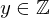
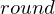

Axiom round_is_closest_int of type Forall¶
from the theory of proveit.numbers.rounding¶
see dependencies
In [1]:
import proveit
# Automation is not needed when only building an expression:
proveit.defaults.automation = False # This will speed things up.
proveit.defaults.inline_pngs = False # Makes files smaller.
%load_axiom_expr # Load the stored axiom expression as 'stored_expr'
# import the special expression
from proveit.numbers.rounding import round_is_closest_int
In [2]:
# check that the built expression is the same as the stored expression
assert round_is_closest_int.expr == stored_expr
assert round_is_closest_int.expr._style_id == stored_expr._style_id
print("Passed sanity check: round_is_closest_int matches stored_expr")
In [3]:
# Show the LaTeX representation of the expression for convenience if you need it.
print(round_is_closest_int.latex())
In [4]:
round_is_closest_int.style_options()
Out[4]:
In [5]:
# display the expression information
round_is_closest_int.expr_info()
Out[5]:
| core type | sub-expressions | expression | |
|---|---|---|---|
| 0 | Operation | operator: 1 operand: 3 | |
| 1 | Literal |  | |
| 2 | ExprTuple | 3 | |
| 3 | Lambda | parameters: 4 body: 5 | |
| 4 | ExprTuple | 35, 30 |  |
| 5 | Conditional | value: 6 condition: 7 | |
| 6 | Operation | operator: 8 operands: 9 | |
| 7 | Operation | operator: 10 operands: 11 | |
| 8 | Literal |  | |
| 9 | ExprTuple | 12, 13 | |
| 10 | Literal |  | |
| 11 | ExprTuple | 14, 15 | |
| 12 | Operation | operator: 17 operand: 22 | |
| 13 | Operation | operator: 17 operand: 23 | |
| 14 | Operation | operator: 20 operands: 19 |  |
| 15 | Operation | operator: 20 operands: 21 |  |
| 16 | ExprTuple | 22 | |
| 17 | Literal | ||
| 18 | ExprTuple | 23 | |
| 19 | ExprTuple | 35, 24 |  |
| 20 | Literal |  | |
| 21 | ExprTuple | 30, 25 |  |
| 22 | Operation | operator: 27 operands: 26 | |
| 23 | Operation | operator: 27 operands: 28 | |
| 24 | Literal |  | |
| 25 | Literal |  | |
| 26 | ExprTuple | 29, 31 | |
| 27 | Literal |  | |
| 28 | ExprTuple | 30, 31 | |
| 29 | Operation | operator: 32 operand: 35 |  |
| 30 | Variable |  | |
| 31 | Operation | operator: 33 operand: 35 |  |
| 32 | Literal |  | |
| 33 | Literal |  | |
| 34 | ExprTuple | 35 |  |
| 35 | Variable |  |